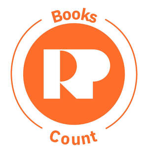

Trade Mark Journal No.2026/011 13 March 2026
UK00004345905 26 February 2026 (9,16,28,41,42)

- Class 9
- Educational software; Downloadable educational media; Children's educational software; Educational computer applications; Downloadable educational course materials.
- Class 16
- Educational publications; Educational and instructional material; Educational books.
- Class 28
- Educational toys; Educational playthings; Electronic educational teaching games; Educational games*.
- Class 41
- Educational research; Educational seminars; Educational instruction; Educational services; Educational demonstrations; Workshops for educational purposes; Development of educational materials; Educational testing; Organization of exhibitions for cultural or educational purposes; Educational and training services; Organisation of educational seminars; Publication of educational teaching materials; Planning of lectures for educational purposes; Providing educational demonstrations; Exhibition services for educational purposes; Publishing of educational material; Planning of seminars for educational purposes; Educational information services; Educational services provided for children; Dissemination of educational material; Provision of educational information; Education; Organising of educational games.
- Class 42
- Programming of educational software.
The Richmond Project